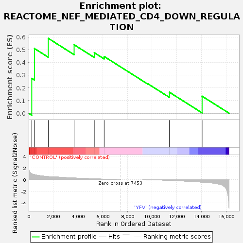
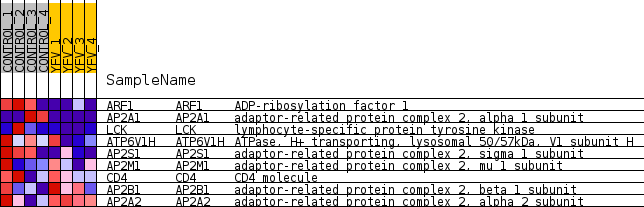
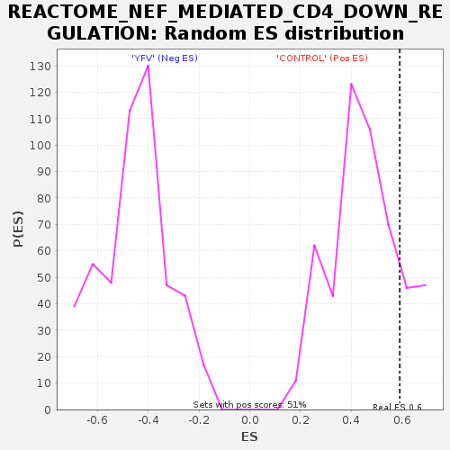

| Dataset | MATRIZ_GSE99081_collapsed_to_symbols.gsea_CLASE_99081.cls#CONTROL_versus_YFV |
| Phenotype | gsea_CLASE_99081.cls#CONTROL_versus_YFV |
| Upregulated in class | CONTROL |
| GeneSet | REACTOME_NEF_MEDIATED_CD4_DOWN_REGULATION |
| Enrichment Score (ES) | 0.5905771 |
| Normalized Enrichment Score (NES) | 1.2790122 |
| Nominal p-value | 0.15944882 |
| FDR q-value | 0.9473155 |
| FWER p-Value | 1.0 |

| SYMBOL | TITLE | RANK IN GENE LIST | RANK METRIC SCORE | RUNNING ES | CORE ENRICHMENT | |
|---|---|---|---|---|---|---|
| 1 | ARF1 | ADP-ribosylation factor 1 | 251 | 0.996 | 0.2757 | Yes |
| 2 | AP2A1 | adaptor-related protein complex 2, alpha 1 subunit | 469 | 0.848 | 0.5105 | Yes |
| 3 | LCK | lymphocyte-specific protein tyrosine kinase | 1591 | 0.510 | 0.5906 | Yes |
| 4 | ATP6V1H | ATPase, H+ transporting, lysosomal 50/57kDa, V1 subunit H | 3683 | 0.268 | 0.5402 | No |
| 5 | AP2S1 | adaptor-related protein complex 2, sigma 1 subunit | 5316 | 0.129 | 0.4773 | No |
| 6 | AP2M1 | adaptor-related protein complex 2, mu 1 subunit | 6117 | 0.067 | 0.4476 | No |
| 7 | CD4 | CD4 molecule | 9668 | -0.011 | 0.2320 | No |
| 8 | AP2B1 | adaptor-related protein complex 2, beta 1 subunit | 11407 | -0.140 | 0.1657 | No |
| 9 | AP2A2 | adaptor-related protein complex 2, alpha 2 subunit | 14053 | -0.451 | 0.1347 | No |

